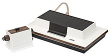
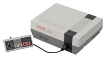
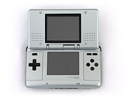
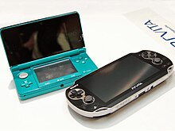

Um jogo eletrônico (português brasileiro) ou jogo eletrónico
(português europeu), também chamado videojogo ou pelo anglicismo
videogame, é um jogo no qual o jogador interage através de
periféricos conectados ao aparelho, como controles (joysticks)
e/ou teclado com imagens enviadas a uma televisão ou um monitor,
ou seja, aquele que usa tecnologia de computador. O termo inglês
video game, ganhou a forma aglutinada no Brasil (como videogame),
tanto para se referir a videojogos, como para se referir aos
consoles onde os jogos se processam.
Os sistemas eletrônicos usados para jogar videojogos são
conhecidos como plataformas — como, por exemplo, computadores,
arcades, celulares e consoles.
O dispositivo de entrada usado para manipular videojogos é chamado
controle e varia de acordo com a plataforma. Por exemplo, um
controle pode ser constituído por um direcional e um único
botão.[2] Outros podem ter dezenas de botões e mais de um
direcional. Muitos jogos de computador podem também ser jogados
com teclado ou uma combinação do teclado com o rato/mouse
simultaneamente ou até mesmo controles específicos.
Os videogames também podem usar outras maneiras de interagir e
prover informação ao jogador. O uso de sons é usado em larga
escala desde os primórdios. Outros tipos de resposta, como
dispositivos de vibração e sensores de movimento também são
bastante utilizados nos videojogos. O avanço tecnológico tem
trazido formas cada vez mais intensas de imersão nos jogos através
destes periféricos, como o reconhecimento de movimentos e de voz,
surgindo assim os jogos em realidade virtual, fruto do
desenvolvimento da tecnologia.
Por conta da falta de documentação é difícil de se determinar qual
teria sido o primeiro jogo eletrônico criado porém a primeira
menção ao que se assemelha a um videojogo datado de 1947; enquanto
testavam equipamentos para o desenvolvimento de televisores e
monitores, criaram um dispositivo de entretenimento ligando um
tubo de raios catódicos em um osciloscópio, patenteado no ano
seguinte pelos físicos Thomas T. Goldsmith Jr. e Estle Ray Mann.
Inspirado na tecnologia de radares, consistia em um dispositivo
analógico que permitia controlar um ponto vetorizado na tela,
simulando mísseis acertando alvos, que eram simplesmente pontos
fixos na tela.
Em 1949, Charlie Adama desenvolveu um programa de computador que
produzia uma bolinha saltitante no computador Whirlwind. Existem
poucas informações sobre esse projeto e, nem sempre é listado como
contribuinte para a história dos jogos.
O jornal Times afirma, que cientista da computação britânico
Christopher Strachey apareceu no Laboratório Nacional de Física
com um programa de computador que simulava o jogo de tabuleiro
damas para o computador Pilot ACE, em 1950.
Em 1952, O professor de ciência da computação Alexander Shafto
Douglas criou o primeiro jogo gráfico para computador na
Universidade de Cambrige, um simulador do jogo da velha.
Na sequência, temos mais alguns exemplos prosaicos dos
antepassados dos videojogos atuais:
Bertie the Brain: Foi um dos primeiros jogos
de computador e um dos primeiros jogos desenvolvidos no início
da história dos videojogos, foi construído em Toronto por
Josef Kates, para a Exposição Nacional Canadense de 1950. O
computador, de quatro metros de altura, permitia que os
participantes da exposição jogassem um jogo de tic tac contra
uma inteligência artificial. O jogador entrou em um movimento
em um teclado iluminado na forma de uma grade de três por
três, e jogou o jogo em uma grade de luzes em cima. A máquina
tinha um nível de dificuldade ajustável. Depois de duas
semanas em exibição pela Rogers Majestic, a máquina foi
desmontada no final da exposição e amplamente esquecida como
uma curiosidade;
Nim: Em 1951 foi criado um computador chamado
NIMROD, cujo propósito era executar um jogo eletrônico. Esse
jogo foi batizado com o nome de Nim. Basicamente tratava-se de
um simples jogo matemático, onde duas pessoas retiravam peças
de uma pilha e o jogador que retirasse a última peça perdia. O
NIMROD, executando o Nim, foi exibido ao público pela primeira
vez em uma exposição de ciências na Grã Bretanha;
Oxo: Em 1952, um professor da Universidade de
Cambridge chamado Alexander Shfto Douglas, também conhecido
como A.S. Douglas, criou o que, para muitos foi, de fato, o
primeiro vídeo game da história. O jogo chamava-se OXO e foi
desenvolvido utilizando um computador EDSAC. O jogo era o que
conhecemos hoje como "jogo da velha";
Mouse in the Maze: No ano de 1955, na União
Soviética, foi criado um dispositivo chamado de "Mouse in the
Maze". Nele, um rato dentro de um labirinto sempre encontrava
o menor caminho possível até o pedaço de queijo. A grande
contribuição do jogo se deveu ao fato do dispositivo ser capaz
de armazenar os dados com o menor caminho entre o rato e o
queijo;
Tennis for Two: Criado em 1958 pelo físico
nuclear norte-americano William Higinbotham (também conhecido
por participar do Projeto Manhattan, que construiu a bomba
atômica), muitos anos antes de "Space Invaders" ou Nolan
Bushnell - fundador da Atari - sonharem em aparecer no
mercado. "Tennis for Two" não passava de um enorme computador
analógico ligado a um osciloscópio, que simulava uma partida
de tênis (ou ping pong). Ele nunca teve distribuição comercial
e ficou em demonstração no Laboratório Nacional de Brookhaven,
Nova York, atraindo a atenção de milhares de jogadores, no dia
18 de outubro de 1958. Cada jogador segurava uma caixa, o
controle, que tinha um dial (botão giratório) e um botão de
pressionar. Com o dial era possível regular os ângulos de
rebatida da bola, que ocorria quando o outro botão era
pressionado;
Spacewar!: Em 1961, no Massachusetts
Institute of Technology (MIT), os pesquisadores criaram o jogo
Spacewar!, cujo tema era uma guerra espacial, estando o
jogador no controle de uma das naves que enfrentava naves
inimigas. Esse jogo foi programado em Assembly (nome da
linguagem de programação de baixo nível) e executado em um
computador DEC-PDP 1. A física, emulada por intermédio de
complicados algoritmos, era o ponto forte de sua jogabilidade
simples e divertida escrito pelos estudantes Martin Graetz,
Steve Russell, e Wayne Wiitanen's em um computador DEC PDP-1
em 1961.
Todos estes possuíam "telas" diferentes. O NIMROD utilizava-se de
um painel de luzes para o jogo Nim, OXO tinha uma tela própria,
Tennis for Two usava um osciloscópio e SpaceWar! usava o display
de vetores do PDP-1.
Em 1971, a empresa Computer Space, criada por Nolan Bushnell e Ted
Dabney, inicia a venda do primeiro arcade do mundo, baseado no
jogo SpaceWar! de 1962.
Em 1972, é lançado o primeiro console doméstico da história:
Odyssey da empresa Magnavox. Neste mesmo ano, Nolan Bushnell,
agora trabalhando na Atari, lança o primeiro grande sucesso
comercial de um videojogo, o jogo arcade Pong. Este sucesso
abriu caminho para inúmeras outras empresas, dando início assim
à lucrativa indústria dos jogos eletrônicos.

Foto do Magnavox Odyssey de 1972, o primeiro console
doméstico.
A grande quantidade de clones do jogo Pong levou a indústria à
primeira grande quebra em 1977, sendo superado principalmente
pelo jogo Space Invaders, dando início à era dourada dos jogos
arcade, inspirando a implantação de máquinas em lugares de
conveniência como restaurantes, centros comerciais, etc. Também
nessa época começaram a surgir as primeiras revistas
especializadas em jogos, o jogo também foi lançado para o
console Atari 2600 quadruplicando as vendas do console.
Em 1979, a Milton Bladley Company lança o Microvision, o primeiro
console portátil a utilizar cartuchos trocáveis, em 1980 a
Nintendo lança a o primeiro dispositivo da sua linha de portáteis
Game & Watch que foi produzida até 1991.
Em 1983, houve uma grande quebra da indústria dos jogos
eletrônicos onde houve uma queda de faturamento de 3,2 bilhões
de dólares estadunidenses para 100 milhões em 1985. Ainda no
mesmo ano, a Nintendo lança o seu console no Japão, o Famicom,
que chega aos Estados Unidos em 1985 com o nome de Nintendo
Entertainment System, o console é considerado um marco do
renascimento dos jogos eletrônicos. Ainda no mesmo ano a Sega
lança o Mark III no Japão que chega aos Estados Unidos em 1986
com o nome de Master System.

Imagem do console Nintendo
Em 1988, a Sega lança o Mega Drive, seu primeiro console 16 bits,
seu principal competidos seria o Super Nintendo Entertainment
System, lançado em 1990.
Em 1989, após o sucesso do NES e aproveitando a fórmula do Game &
Watch, a Nintendo lança o Game Boy, primeiro portátil a fazer
grande sucesso na indústria, ainda no mesmo ano, a Atari lança seu
competidor, o Lynx, o primeiro portátil com tela colorida, em 1990
a Sega lança o seu portátil, o Game Gear.
Em 1994, a Sega lança o seu console Sega Saturn, no mesmo ano, a
Sony lança o seu primeiro console, o PlayStation, em 1996 a
Nintendo lança o Nintendo 64.
Em 1998, a Sega lança o Dreamcast e a Nintendo lança o portátil
Game Boy Color, em 1999 a Bandai lança seu portátil, o
WonderSwan, em 2000 a Sony lança o PlayStation 2 que detém o
título de console mais vendido da história, em 2001 a Nintendo
lança o Gamecube, o portátil Game Boy Advance e a Microsoft
lança o Xbox.

Imagem do console Game Boy da Nitendo
Em 2004, a Nintendo lança o Nintendo DS o portátil mais vendido da
história, no mesmo ano, a Sony lança o seu competidor, o
PlayStation Portable.
Em 2005, a Microsoft lança o Xbox 360, em 2006 a Sony lança o
PlayStation 3 e a Nintendo lança o Wii.
Em 2011, a Nintendo lança o portátil Nintendo 3DS, no mesmo ano
a Sony lança o portátil PlayStation Vita. Em 2012 a Nintendo
lança o Wii U, em 2013 a Sony lança o PlayStation 4 e a
Microsoft lança o Xbox One.

Imagem do console Nintendo 3DS da Nitendo
Em 2017, a Nintendo lança o console Nintendo Switch.
Em 2020 a Microsoft lança o Xbox Series X|S e a Sony lança o
PlayStation 5.